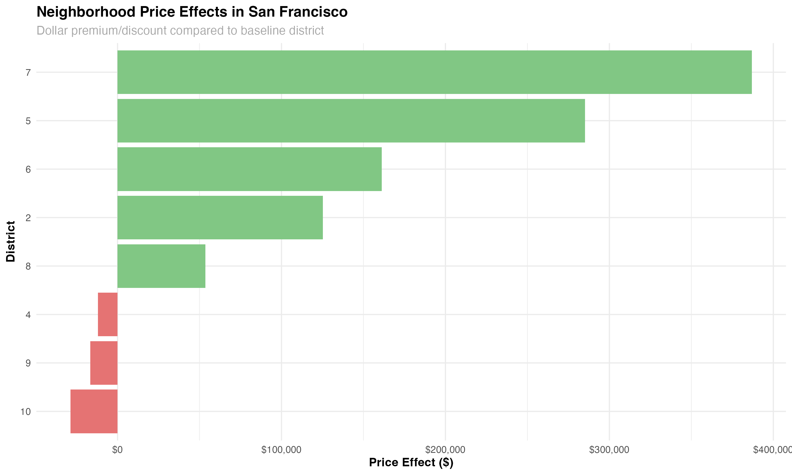
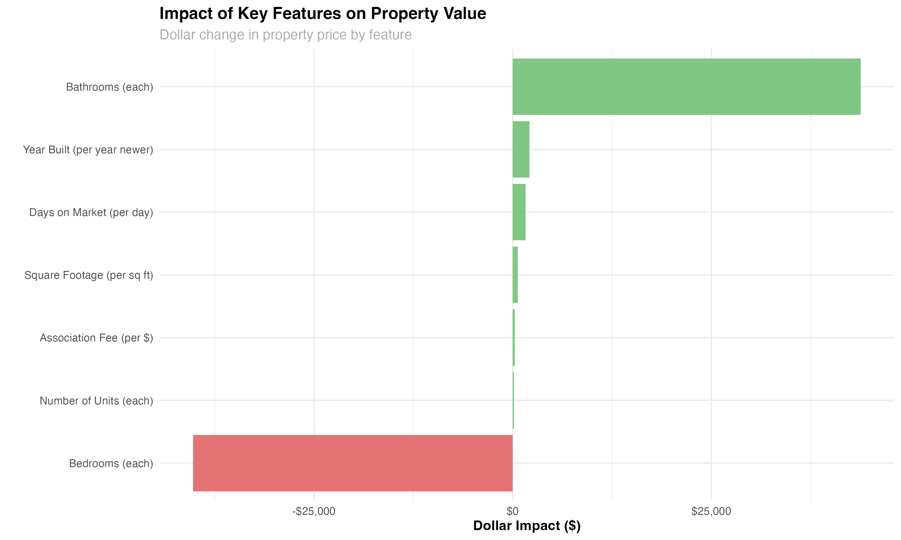
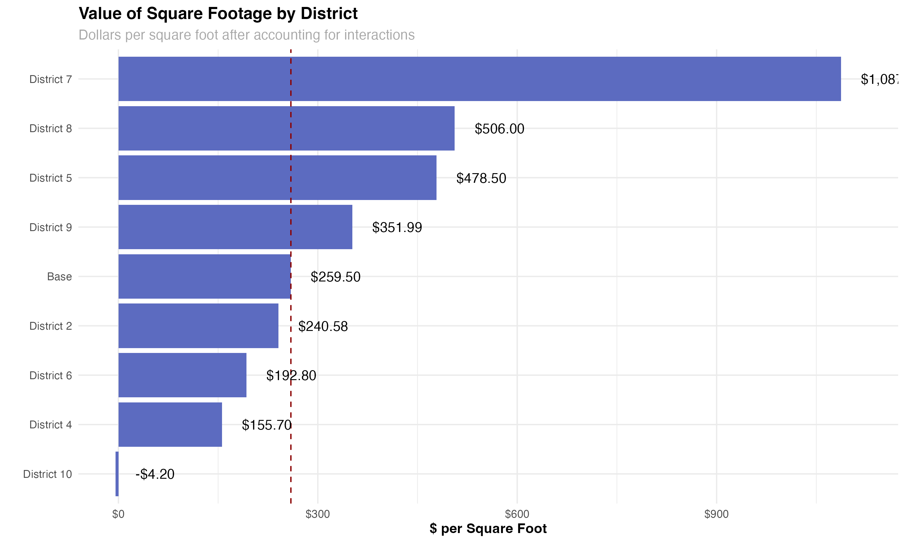
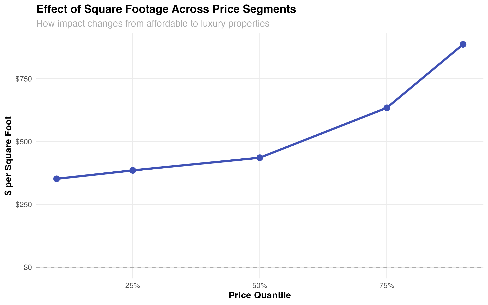
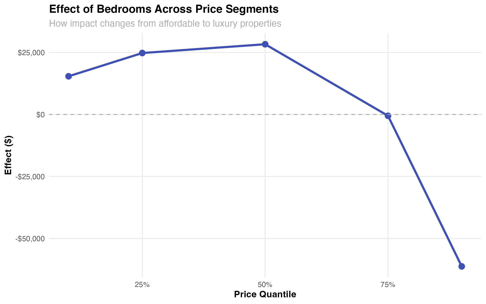
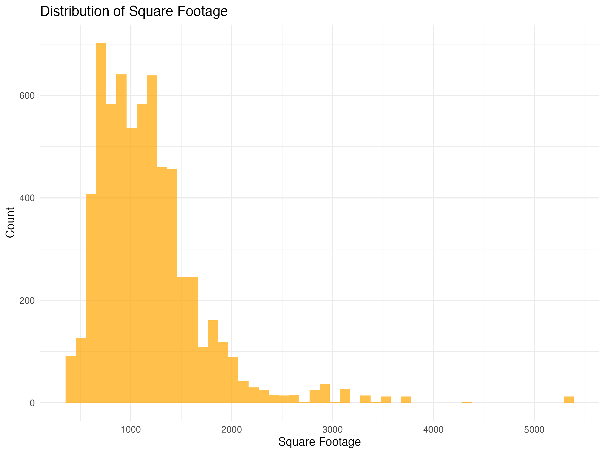
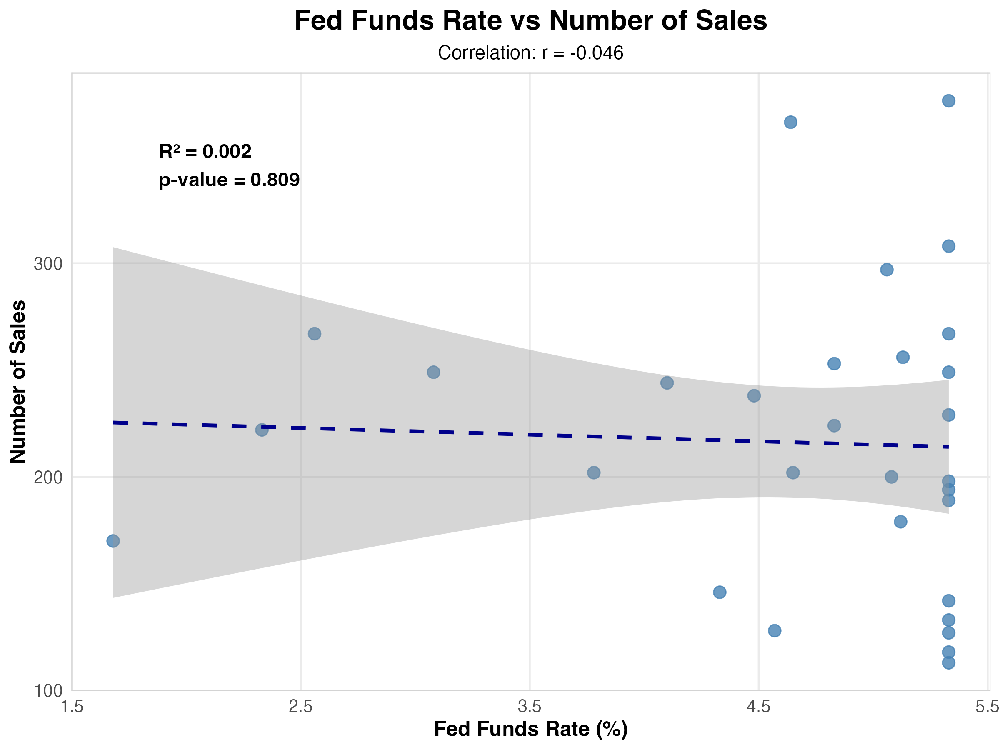

This analysis illustrates key factors influencing property prices across different districts. One prominent insight is the significant price premium associated with District 7, where homes command nearly $387,000 more than average, driven by location-based desirability. This effect is mirrored in the Square Footage Value by District plot, which highlights the dramatic disparity in price per square foot—exceeding $1,000/sqft in District 7 but falling below $200/sqft in District 10, reflecting socioeconomic and infrastructural variations.
Additionally, the Square Footage Effect Across Price Tiers visualization emphasizes how the impact of square footage intensifies in luxury markets, where homes in the top 90th percentile show a 2.5× greater return on added square footage than mid-tier properties, indicating that size matters more at higher price points. Interestingly, the Bedroom Effect Across Price Tiers chart reveals a counterintuitive trend: increasing the number of bedrooms may actually reduce property value when controlling for square footage, suggesting that buyers prioritize fewer, more spacious rooms.
Furthermore, the Days on Market (DOM) and Condo Sales by Month plots offer insights into market dynamics and liquidity, illustrating seasonal variations and temporal trends. Despite these fluctuations, the analysis finds no consistent relationship between condo sales volume and changes in the Federal Reserve interest rates, reflecting the complex interplay of local housing demand and broader macroeconomic forces.
Collectively, these visualizations provide a nuanced, data-driven understanding of San Francisco’s real estate market, underscoring the multidimensional factors that shape property valuation and buyer behavior.









